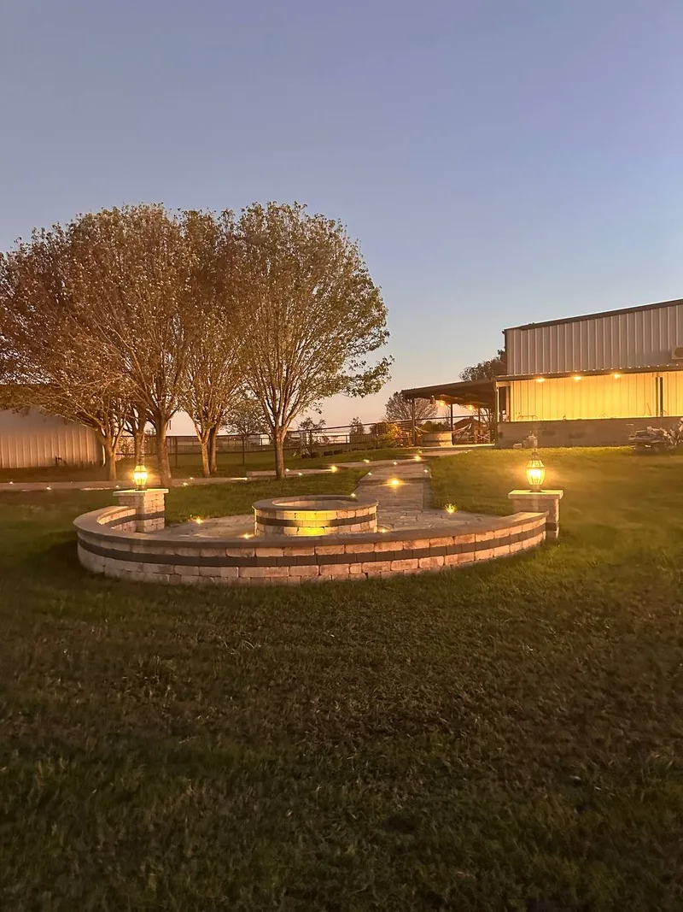
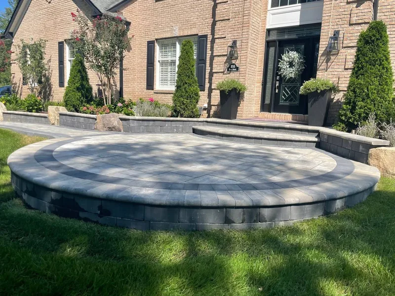
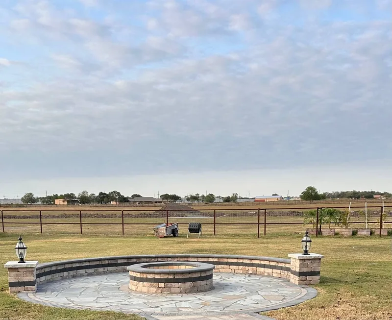
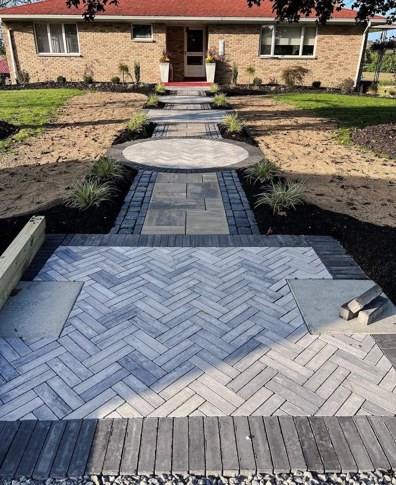

Premium hardscape and outdoor living built for Rosenberg homeowners — custom fire pits, paver patios, walkways, and landscape lighting.

Circular raised paver patio with custom stone seating wall, dark charcoal border accents, and dual-level steps — designed for the homeowner who expects perfection.


Herringbone paver field with circular medallion centerpiece, dark charcoal border, and ornamental grasses — a front entry that announces the home before you reach the door.
Solid insulated patio covers and attached structures that protect your outdoor space year-round.
See cover work →Aluminum louvered pergolas, wood pergolas, and custom shade structures built to last decades.
See pergola work →Custom stone fire pits with circular flagstone patios and built-in seating walls with lantern pillars.
See fire work →Custom grills, countertops, and full cooking spaces that turn your backyard into an entertainment hub.
See kitchen work →Premium synthetic grass and custom putting greens built for Texas heat and year-round beauty.
See turf work →Full backyard design — patios, seating, shade, and lighting planned as one cohesive system.
See living spaces →Stone veneers, columns, retaining walls, and decorative masonry built to impress.
See stonework →Stamped concrete, paver driveways, and decorative concrete with serious curb appeal.
See driveway work →Exterior painting, fencing, and additional services to round out your project.
See more →Free on-site estimate — no pressure, no obligation.